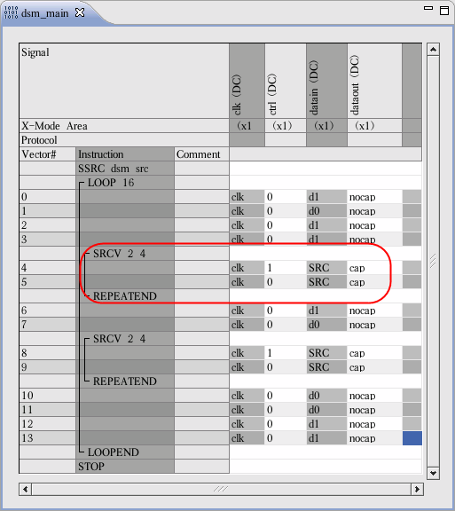

Entering the vectors in the Main pattern
After a MAIN pattern (label) for DSM has been defined, you can enter in the Vector Editor the actual vectors which contain the input data of the device and the expected output data. This topic takes the audio device as the example. The operation for the other demo devices is similar.
Entering the vectors is done in the normal way.
The software decides which pin is a source pin from the most recent SSRC
instruction. After you insert the SRCV instruction, a specific symbol is
automatically displayed on the source pins according to their format:
- If the pin is represented in SC (state character) format,
$is shown. - If the pin is represented in DC (device cycle name) format,
SRCis shown. - If the pin is represented in PW (physical waveform index) format,
100is shown, which is the hex value for 256.

Functional changes
- Introduced before SmarTest 6.3.2